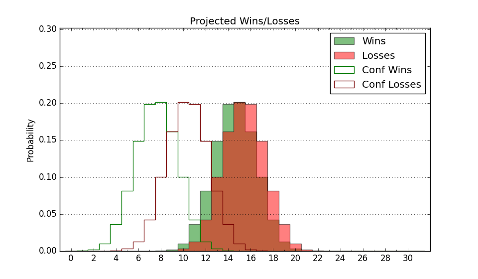

| Home | Game Probabilities | Conferences | Preseason Predictions | Odds Charts | NCAA Tournament |
| City: | Wichita, Kansas | |
| Conference: | American (9th)
| |
| Record: | 0-3 (Conf) 7-8 (Overall) | |
| Ratings: | Comp.: 6.5 (105th) Net: 5.9 (114th) Off: 99.1 (218th) Def: 93.1 (55th) SoR: 0.2 (180th) |
| Remaining | ||||||
|---|---|---|---|---|---|---|
| Date | Opponent | Win Prob | Pred. | |||
| 1/8 | @ South Florida (200) | 57.0% | W 62-61 | |||
| 1/14 | Tulsa (238) | 87.0% | W 72-59 | |||
| 1/19 | @ Memphis (63) | 21.2% | L 62-72 | |||
| 1/22 | @ SMU (178) | 52.9% | W 64-63 | |||
| 1/25 | Tulane (127) | 70.2% | W 71-65 | |||
| 1/29 | @ East Carolina (176) | 52.6% | W 63-62 | |||
| 2/2 | Houston (1) | 8.3% | L 50-65 | |||
| 2/5 | @ Tulsa (238) | 66.2% | W 68-63 | |||
| 2/8 | UCF (43) | 43.0% | L 56-58 | |||
| 2/12 | SMU (178) | 79.3% | W 67-59 | |||
| 2/16 | @ Temple (161) | 49.1% | L 62-63 | |||
| 2/23 | Memphis (63) | 47.8% | L 66-67 | |||
| 2/26 | @ Tulane (127) | 40.9% | L 67-69 | |||
| 3/2 | @ Houston (1) | 2.6% | L 46-69 | |||
| 3/5 | South Florida (200) | 81.9% | W 66-57 | |||
| Previous | Game Score | |||||
| Date | Opponent | Win Prob | Result | Off | Def | Net |
| 11/7 | Central Arkansas (335) | 94.4% | W 79-55 | -5.8 | 11.5 | 5.7 |
| 11/12 | Alcorn St. (292) | 91.1% | L 57-66 | -16.1 | -27.8 | -44.0 |
| 11/17 | @Richmond (111) | 37.4% | W 56-53 | 3.6 | 9.9 | 13.5 |
| 11/21 | (N) Grand Canyon (95) | 47.2% | W 55-43 | 5.1 | 27.5 | 32.6 |
| 11/22 | (N) San Francisco (103) | 49.4% | L 63-67 | -1.4 | -2.9 | -4.3 |
| 11/26 | Tarleton St. (159) | 76.0% | W 83-71 | 26.0 | -15.6 | 10.4 |
| 11/29 | Missouri (40) | 42.2% | L 84-88 | 1.3 | -4.2 | -2.9 |
| 12/3 | @Kansas St. (30) | 15.0% | L 50-55 | -13.8 | 19.4 | 5.6 |
| 12/10 | Longwood (114) | 67.5% | W 81-63 | 18.5 | 1.4 | 19.9 |
| 12/13 | Mississippi Valley St. (360) | 98.1% | W 71-48 | -11.0 | 5.7 | -5.3 |
| 12/17 | (N) Oklahoma St. (24) | 22.0% | L 49-59 | -9.4 | 2.3 | -7.1 |
| 12/22 | Texas Southern (241) | 87.4% | W 65-56 | -10.1 | 1.3 | -8.8 |
| 12/28 | @UCF (43) | 18.2% | L 45-52 | -0.5 | 5.5 | 5.0 |
| 12/31 | East Carolina (176) | 79.0% | L 69-79 | 3.8 | -37.8 | -34.0 |
| 1/5 | Cincinnati (92) | 61.4% | L 61-70 | -3.4 | -4.7 | -8.1 |
| Stats & Trends | |||||
|---|---|---|---|---|---|
| Current | Day | Week | Month | Season | |
| Composite | 6.5 | -0.4 | -2.4 | -2.9 | -3.7 |
| Comp Rank | 105 | -7 | -17 | -24 | -31 |
| Net Efficiency | 5.9 | -0.4 | -2.7 | -3.0 | -- |
| Net Rank | 114 | -7 | -23 | -25 | -- |
| Off Efficiency | 99.1 | -0.2 | +0.4 | -1.4 | -- |
| Off Rank | 218 | -4 | +2 | -24 | -- |
| Def Efficiency | 93.1 | -0.3 | -3.1 | -1.6 | -- |
| Def Rank | 55 | -1 | -20 | -7 | -- |
| SoS Rank | 151 | +13 | -19 | -39 | -- |
| Exp. Wins | 14.6 | -0.7 | -2.1 | -2.6 | -3.3 |
| Exp. Conf Wins | 7.6 | -0.7 | -2.1 | -2.6 | -2.3 |
| Conf Champ Prob | 0.0 | -0.0 | -0.2 | -0.7 | -7.8 |

| Advanced Stats | ||
|---|---|---|
| Stat | Value | Rank |
| Off Eff FG % | 0.481 | 257 |
| Off Ast Ratio | 0.118 | 317 |
| Off ORB% | 0.274 | 166 |
| Off TO Rate | 0.135 | 27 |
| Off FT Ratio | 0.247 | 325 |
| Def Eff FG % | 0.431 | 14 |
| Def Ast Ratio | 0.138 | 167 |
| Def ORB% | 0.266 | 169 |
| Def TO Rate | 0.147 | 270 |
| Def FT Ratio | 0.221 | 23 |